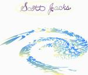

| Artist: | Scott Jacks |
| Title: | Scott Jacks |
| Label: | First Aid Records |
| Length(s): | 45 minutes |
| Year(s) of release: | 1995 |
| Month of review: | [02/2002] |
| 1) | Another Time Another Place | 3.02 |
| 2) | Big Corn | 2.26 |
| 3) | Creative Arrogant Parasites | 3.55 |
| 4) | Open Letter To Someone | 3.18 |
| 5) | Voice 63 | 4.28 |
| 6) | A Hard Road To Peace | 3.40 |
| 7) | Almost All Of The Time | 3.37 |
| 8) | Blend | 2.35 |
| 9) | Royal Syrian Thyme | 2.11 |
| 10) | Stagnation On The Runway | 3.35 |
| 11) | Zapruder Four | 1.32 |
| 12) | Sparkies | 7.10 |
| 13) | Big Corn (revisited) | 2.26 |
On Creative Arrogant Parasites the music becomes a but fusionish with guitar and light cosmic keyboards. Open Letter To Someone is entirely different: acoustic guitar, but with nice melodies.
Voice 63 is more up-beat and tends to King Crimson, but friendlier. The vocals sound a bit slow and may be compared to John Wetton. The latter part of the track is more proggy and has a good tension. It reminds me of UK (yes also a Wetton band). A Hard Road To Piece features hammered piano and is quite interesting although the drums sound a bit dry.
Almost All Of The Time is a slow plodding track with a good melody based on piano and keyboards. The chords are heavy though. On the whole it does have a demo feel lying over it and the singing is not always clean.
In Blend, it is the atmosphere that counts: a spacey opening followed by a Spanish guitar and an atmosphere rich in effects. A strumming acoustic guitar makes for a Floydian feel on the easy going Royal Syrian Thyme. Stagnation On The Runway is more up-beat, but I found it rather boring. Zapruder Four has a bit of the same problem with its New Agey feel. It can be likened to Zazen.
Sparkies is the longest track on the album. Repetitive keys in the first part with unobtrusive vocals. Not bad, but a bit slow. Later the music gets to be more symphonic and we transit to a part with more keyboards and guitar. I was thinking of Camel here, and later a bit of Genesis in the keyboards.
The final track is a recurrence of Big Corn with pounding drums and sequencers.